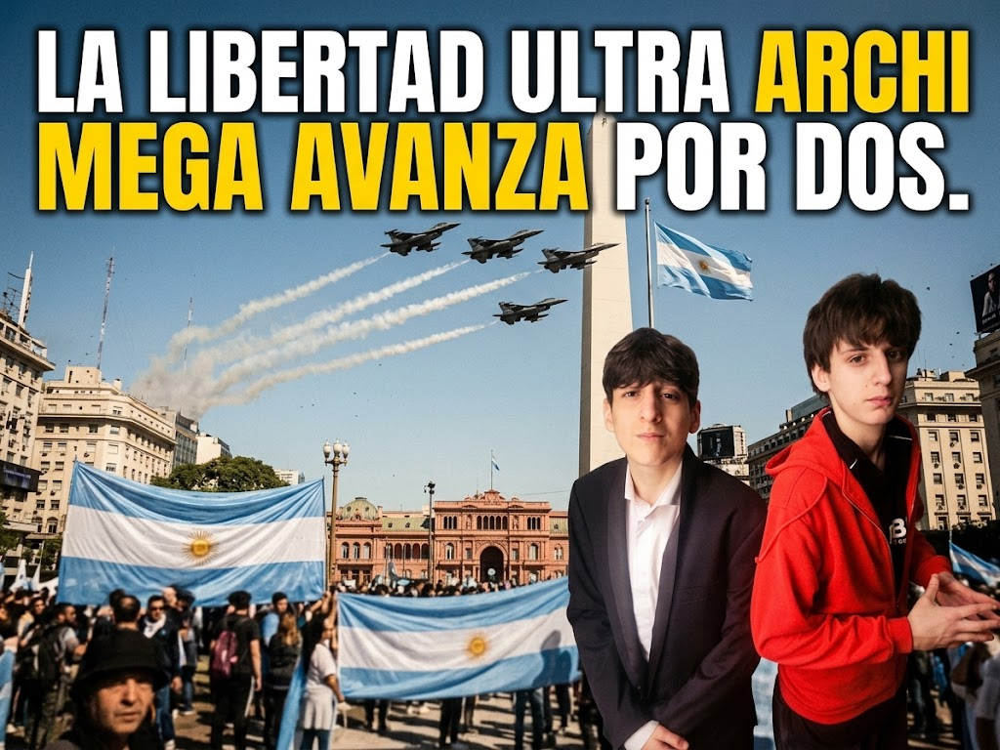

LIBERTAD
Para trabajar, emprender y construir un proyecto propio.
Mirá la propuesta
Conocé la idea que inspiró este proyecto ficticio antes de recorrer el plan.
Ver en YouTube ↗Partido ficticio · Proyecto escolar
Más libertad, más orden, más futuro… por dos.

Campaña ficticia · LLUAMAx2
Nuestro plan
Un programa ficticio para pensar una Argentina con reglas claras, oportunidades y herramientas para progresar.
Para trabajar, emprender y construir un proyecto propio.
Respeto por la ley y reglas iguales para todos.
Educación útil, tecnología y empleo como prioridad.
Propuestas centrales
Seguridad
Seguridad → orden
Economía
Economía → trabajo
Educación
Educación → futuro
Inmigración
Inmigración → legalidad
El contraste
Política tradicional
Modelo LLUAMAx2
Iniciativas claramente humorísticas
Porque cuando el nombre es exagerado, algunas ideas también pueden serlo. Parodia: no son propuestas reales.
Con visión láser de rayos X para detectar el delito antes de que aparezca.
Eliminar impuestos y que el Estado pague por existir.
Finanzas cripto desde jardín, con alcancía digital incluida.
Un muro electromagnético invisible, porque las paredes ya pasaron de moda.
Elección ficticia · Proyecto escolar
La Libertad Ultra Archi Mega Avanza por Dos.